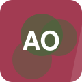

People
Team
Engineers, scientists and one very patient librarian across three offices.
Maren Halvik
Co-founder & Chief Executive
Copenhagen · joined 2003
Maren trained as a broadcast camera engineer and spent six years repairing studio cameras before co-founding Halvane with Teodor in 2003 (the name is half Halvik, half Vane). She still carries a pocket compact everywhere, judges the occasional reader contest and insists that the only honest colour is 18% grey.
- Strategy
- Client reviews
- Street photography
Teodor Vane
Co-founder & Chief Scientist
Copenhagen · joined 2003
Teodor built the first Halvane test procedures on a kitchen table and a 5-megapixel compact during a western Norway road trip in the summer of 2003. He curates the 'museum shelf' of historic bodies, still borrows them for winter walks, and spent much of 2021 digitising his own slide archive. Pixel, his dachshund, appears in more test frames than any employee.
- Colour science
- Sensor history
- Archive Zero
Grace Adeyemi
Head of Operations & Field Kit Librarian
Copenhagen · joined 2012
Grace runs the Field Kit Library, the ingest desk and everything in between. Every body, lens and drone that leaves the Nordhavn store is checked out against a name and a date - a rule she introduced in 2012 and has defended ever since.
- Operations
- Field Kit Library
- Ingest pipeline
Felix Brandauer
Principal Field Engineer, Alpine & Nordic
Copenhagen · joined 2010
Felix joined in March 2010; his first summer assignments included two sheep and a borrowed body. Since then he has led the Alpine & Nordic Light Programme: glacial lakes in 2010, the Inside Passage in 2014, and the 2021 autumn rugged-kit tour from Occitanie to the Ruhr.
- Field campaigns
- Weather sealing
- Phone HDR
Kenji Moriwaki
Colour Bench Lead
Copenhagen · joined 2014
Kenji runs the colour bench: charts, targets, still lifes and the bench mascot. He is famous for labelling every body he configures - if a bench camera has an owner set in its menus, it was probably Kenji who set it.
- Colour targets
- Profiling
- Still-life series
Lucia Ferrante
Director, Florence Mobile Imaging Lab
Florence · joined 2015
Lucia opened the Florence lab in 2015 and ran the Smartphone Field Panel: dozens of handsets, the same scenes, no edits in camera. Her weekend field days in the Mugello hills became the panel's most-used reference set.
- Smartphone evaluation
- Panel design
- Field days
Dana Whitlock
Head of Aerial & Action Systems
Boulder · joined 2016
Dana built the Boulder team from a borrowed garage and one quadcopter. She designed our stabiliser vibration rig and still flies every new airframe herself before it is signed out.
- Drones
- Action cameras
- Vibration testing
Owen Achterberg
Mobile Systems Engineer
Remote (Richmond, Virginia) · joined 2019
Owen works remotely from Richmond, Virginia and joins the Boulder team on site for one week each month. He specialises in HEIF containers, phone RAW pipelines and the gap between what a spec sheet promises and what a file records.
- HEIF/HEIC
- Phone RAW
- US field work
Rosa Quintero
Communications & Media
Copenhagen · joined 2018
Rosa edits this website, the newsletter and every press kit. She also books the conference trips nobody else wants to plan.
- Communications
- Media kit
- Events
Jonas Ekdahl
Field Engineer, Rugged Kit
Copenhagen · joined 2019
Jonas leads rugged-kit evaluations and was field lead for TIDEMARK-25. He spent October 2023 testing waterproof compacts at a trade fair in Japan and is a regular speaker at imaging-assurance conferences.
- Rugged kit
- Insurance documentation
- Drones

Amara Osei
Lead, Provenance & Metadata Assurance
Copenhagen · joined 2021
Amara came to Halvane from a newsroom verification desk. She leads our Provenance & Metadata Assurance practice and her rule is simple: if you cannot explain a timestamp, you cannot trust it.
- Verification
- Metadata audits
- Training
Alumni and interns
- Matteo Rinaldi — Field Technician, Florence (2015-2019). Co-ran the Mugello field days with Lucia, including the August 2015 rail walk.
- Ida Holm — Imaging Intern, summer 2024. Ingest desk; back-filled the legacy compacts set into the archive.
- Tomas Varga — Imaging Intern, summer 2025 (June-August). Ingest desk; archive digitisation and report production support.
Portraits are illustrations; we do not publish staff photographs.